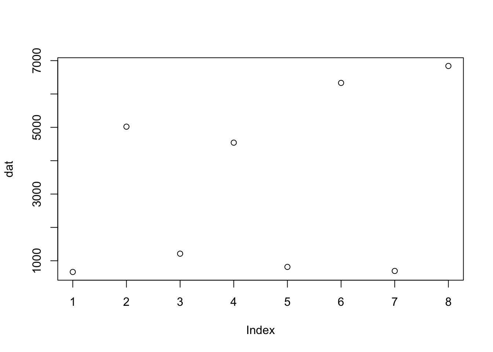
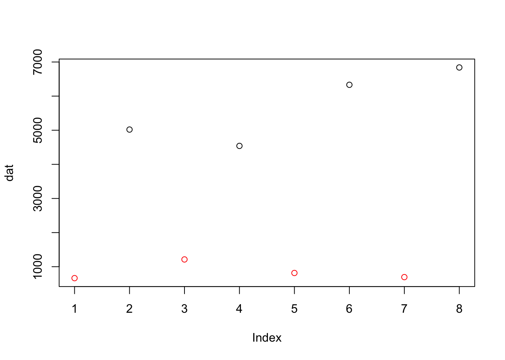

## Loading required package: airwaylibrary(SummarizedExperiment)
data(airway, package="airway")
airway## class: RangedSummarizedExperiment
## dim: 64102 8
## metadata(1): ''
## assays(1): counts
## rownames(64102): ENSG00000000003 ENSG00000000005 ... LRG_98 LRG_99
## rowData names(0):
## colnames(8): SRR1039508 SRR1039509 ... SRR1039520 SRR1039521
## colData names(9): SampleName cell ... Sample BioSampleclass() of airway? What does the class tell you about the information stored about the features (genes) in the dataset?class(airway)airway # it tells you
# but to get the result as a number:
nrow(airway)airway # it tells you
# but to get the result as a number:
ncol(airway)# check the names of the available assays
assayNames(airway)
# Both below are identical
assay(airway, "counts")[56, ]
assays(airway)[[1]][56, ]rownames() of airway? What do these represent? What gene is represented by the first row of data?head(rownames(airway))
# These are Ensembl gene identifiers
# ENSG00000000003 is the identifier of the "TSPAN6" genecolData(airway)colData(airway) # and count
colData(airway)$dex # and count
table(colData(airway)$dex)table(colData(airway)$cell)
length(unique(colData(airway)$cell))rowRanges(airway) give you? What is the length of the object? What does each element of rowRanges(airway) contain?rowRanges(airway)
length(rowRanges(airway))
rowRanges(airway)[[1]]# get the assay data for DUSP1
dat = assay(airway, "counts")["ENSG00000120129", ]# get the assay data for DUSP1
plot(dat)
dextrt = colData(airway)$dex
plot(dat, col=dextrt)
sessionInfo()## R version 3.5.0 RC (2018-04-16 r74624)
## Platform: x86_64-apple-darwin15.6.0 (64-bit)
## Running under: macOS Sierra 10.12.6
##
## Matrix products: default
## BLAS: /Library/Frameworks/R.framework/Versions/3.5/Resources/lib/libRblas.0.dylib
## LAPACK: /Library/Frameworks/R.framework/Versions/3.5/Resources/lib/libRlapack.dylib
##
## locale:
## [1] en_US.UTF-8/en_US.UTF-8/en_US.UTF-8/C/en_US.UTF-8/en_US.UTF-8
##
## attached base packages:
## [1] stats4 parallel stats graphics grDevices utils datasets
## [8] methods base
##
## other attached packages:
## [1] airway_0.114.0 knitr_1.20
## [3] nycflights13_0.2.2 ggplot2_2.2.1
## [5] BSgenome.Hsapiens.UCSC.hg19_1.4.0 BSgenome_1.47.5
## [7] rtracklayer_1.39.13 BiocStyle_2.7.9
## [9] VariantAnnotation_1.25.13 SummarizedExperiment_1.9.18
## [11] DelayedArray_0.5.35 BiocParallel_1.13.3
## [13] matrixStats_0.53.1 Rsamtools_1.31.3
## [15] Biostrings_2.47.12 XVector_0.19.9
## [17] GenomicFeatures_1.31.10 AnnotationDbi_1.41.6
## [19] Biobase_2.39.2 GenomicRanges_1.31.23
## [21] GenomeInfoDb_1.15.5 IRanges_2.13.29
## [23] S4Vectors_0.17.43 AnnotationHub_2.12.0
## [25] BiocGenerics_0.25.3
##
## loaded via a namespace (and not attached):
## [1] httr_1.3.1 bit64_0.9-7
## [3] shiny_1.0.5 assertthat_0.2.0
## [5] interactiveDisplayBase_1.18.0 blob_1.1.1
## [7] GenomeInfoDbData_1.1.0 yaml_2.1.19
## [9] progress_1.1.2 pillar_1.2.2
## [11] RSQLite_2.1.0 backports_1.1.2
## [13] lattice_0.20-35 digest_0.6.15
## [15] promises_1.0.1 colorspace_1.3-2
## [17] htmltools_0.3.6 httpuv_1.4.3
## [19] Matrix_1.2-14 plyr_1.8.4
## [21] XML_3.98-1.11 pkgconfig_2.0.1
## [23] biomaRt_2.35.13 bookdown_0.7
## [25] zlibbioc_1.25.0 xtable_1.8-2
## [27] scales_0.5.0 later_0.7.2
## [29] tibble_1.4.2 lazyeval_0.2.1
## [31] cli_1.0.0 magrittr_1.5
## [33] crayon_1.3.4 mime_0.5
## [35] memoise_1.1.0 evaluate_0.10.1
## [37] BiocInstaller_1.30.0 tools_3.5.0
## [39] prettyunits_1.0.2 stringr_1.3.1
## [41] munsell_0.4.3 compiler_3.5.0
## [43] rlang_0.2.0 grid_3.5.0
## [45] RCurl_1.95-4.10 bitops_1.0-6
## [47] labeling_0.3 rmarkdown_1.9
## [49] gtable_0.2.0 DBI_0.8
## [51] curl_3.2 R6_2.2.2
## [53] GenomicAlignments_1.15.14 utf8_1.1.3
## [55] bit_1.1-12 rprojroot_1.3-2
## [57] stringi_1.2.2 Rcpp_0.12.16
## [59] xfun_0.1